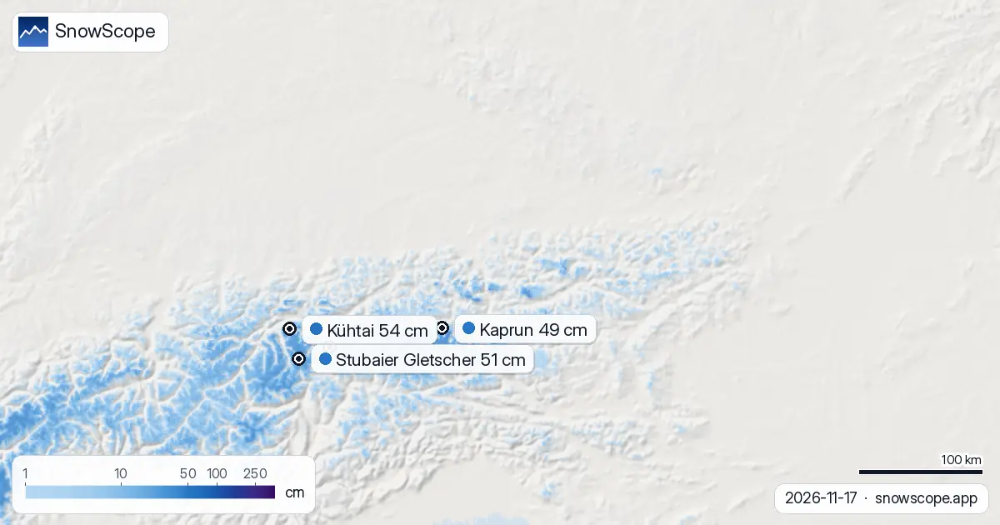

Austria is behind: Kühtai has 20 cm, a normal 17 November has 33 cm
Kühtai has 20 cm at about 2,223 m today. A normal 17 November has 33 cm there, so the snow is at 61 % of the usual depth.
See the live snow forecast for Kühtai in the SnowScope appSnow depth, powder alerts and the 3D map, free.
Behind a normal year
A slow start is common and says little about January. For now, plan on the highest lifts and on runs with snowmaking.
In Austria, about 15,400 km² of high ground is white today, 4,150 km² lost since yesterday. That is 30 % of the high ground we map in Austria.
| Resort | Today | Normal for the date | Share of normal |
|---|---|---|---|
| Kühtai | 20 cm | 33 cm | 61 % |
| Stubaier Gletscher | 29 cm | 44 cm | 66 % |
| Kaprun | 19 cm | 22 cm | 86 % |
| Bergeralm | 2 cm | 20 cm | 10 % |
| Hochoetz-Kühtai | 8 cm | 26 cm | 31 % |

Compared with past winters
Here is how the deepest resorts compare with their usual 17 November: Kühtai: 20 cm at about 2,223 m, against 33 cm in a normal year; Stubaier Gletscher: 29 cm at about 2,450 m, against 44 cm in a normal year; Kaprun: 19 cm at about 1,894 m, against 22 cm in a normal year; Bergeralm: 2 cm at about 1,620 m, against 20 cm in a normal year.
0 of these 4 resorts are above their usual depth for the date.
These depths are for one height on each mountain, below the top, so they read lower than the upper-slope numbers further down.
In past winters the best snow at Kühtai usually came early March / late March.
Forecast for the week
Snow is in the forecast: up to 23 cm by the end of the third day, up to 47 cm within seven days.
The snowiest day looks like Saturday 21 November, with up to 15 cm in the snowiest spots.
Further out, days 8 to 14 show up to 16 cm on the snowiest slopes.
From the valleys to the summits
Average depth of the snowpack by height band: 500-1,000 m: on average under 1 cm (2 % of the ground white); 1,000-1,500 m: on average under 1 cm (12 % of the ground white); 1,500-2,000 m: on average 2 cm (56 % of the ground white); 2,000-2,500 m: on average 12 cm (98 % of the ground white); above 2,500 m: on average 24 cm (100 % white).
Best resorts right now
At the top of the list, Kühtai reports 54 cm.
Next on the list: Stubaier Gletscher (51 cm), Kaprun (49 cm), Bergeralm (49 cm) and Hochoetz-Kühtai (44 cm).
Kühtai picked up 9 cm in the last three days and could add 15 cm by Friday 20 November.
At Stubaier Gletscher: 7 cm of fresh snow over three days, 13 cm more expected by Friday 20 November.
Snow lies on the upper slopes of 225 out of 279 resorts in Austria.
The rest of the shortlist: Kaprun: 49 cm on top, 5 cm in three days, 11 cm expected; Bergeralm: 49 cm on top, 4 cm in three days, 9 cm expected; Hochoetz-Kühtai: 44 cm on top, 9 cm in three days, 15 cm expected.
On the ground
The snow is retreating uphill, so plan on the higher lifts and avoid the low valley runs.
Keep an eye on the forecast: the coming snow could change the picture quickly.
How much of the country is white
Most of the ground is white from about 1,700 m up. Over the week the white area has hardly moved from 15,260 km².
The latest snowfall
Vorarlberg, Tyrol and the Ötztal Alps got the most fresh snow over three days, up to 8 cm.
In the past day, up to 5 cm was added.
At least 5 cm fell over some 3,370 km².
The neighbours today
For comparison, the neighbours on the same day: Switzerland: 41 % white, deepest Glacier 3000 with 46 cm, up to 85 cm in the week ahead; Germany: 2 % white, deepest Zugspitze with 54 cm, up to 31 cm in the week ahead.
Planning a day on the snow
Above 2,000 m the ground is almost fully white (98 % covered), so runs up there have a continuous base.
Between 1,500 m and 2,000 m the cover is patchy, about 56 % white: expect grass and stones between the snow.
Below 1,000 m the slopes are still almost bare.
If you can choose the day, go after Saturday 21 November: the fresh snow then has time to settle and the roads to be cleared.
Tips for skiers
- Read the local avalanche bulletin before going off-piste.
- Fresh snow on a cold base sticks badly: take care on steep slopes.
- Early-season snow is thin over rocks: ski the groomed runs first.
About these numbers
Resort snow depths are the deepest snow on the resort's upper slopes from the SnowScope snow model (about 1 km, run of 17 November); they are estimates for an area, not a measurement at one point. Station values are measurements on the date shown. Forecasts can change. Always read the official avalanche bulletin before going off-piste.
Cite this report
For research, teaching or the press: the numbers and charts are free to reuse under CC BY 4.0 with this citation.
SnowScope (2026), Austria is behind: Kühtai has 20 cm, a normal 17 November has 33 cm, https://snowscope.app/blog/en/2026/11/austria-snow-report-17-november-2026.html, accessed 2026-11-17
SnowScope (Atlas Labs). (2026, November 17). Austria is behind: Kühtai has 20 cm, a normal 17 November has 33 cm. SnowScope snow reports. https://snowscope.app/blog/en/2026/11/austria-snow-report-17-november-2026.html
BibTeX
@misc{snowscope2026austriasnowreport17novem,
author = {{SnowScope (Atlas Labs)}},
title = {Austria is behind: Kühtai has 20 cm, a normal 17 November has 33 cm},
year = {2026},
month = nov,
howpublished = {\url{https://snowscope.app/blog/en/2026/11/austria-snow-report-17-november-2026.html}},
note = {Published 2026-11-17 12:53 UTC; accessed 2026-11-17}
}· CC BY 4.0 · Methods, data and tools →
Kühtai: snow and temperature by height, this winter vs last (tools) →
Follow Kühtai
Free: a message when fresh snow is coming, and the forecast every morning.
More snow reports

Himalaya snow cover in November 2026 from NASA MODIS: snow on 610,409 km² of ground above 2,000 m between the Hindu Kush and Bhutan, half the clear ground white from about 4,800 m in Nepal and 3,600 m in the Karakoram. The NDSI explained, plus shadows, cloud and the low autumn sun.

SnowScope's peak finder is a free peak finder app: point your phone at the mountains and it names the summits, with height, distance and climb time. Our tests: 98 % of the summits it lists are really in sight, and on real photos it corrected compass errors of up to 105° to 0.15°. Free with 3 names, every peak for $0.99 once.

A slope map of Les Grands Montets and seven other ski areas shows how much of the ground is steeper than 30°, 35° and 40°, and why that line matters for avalanches.